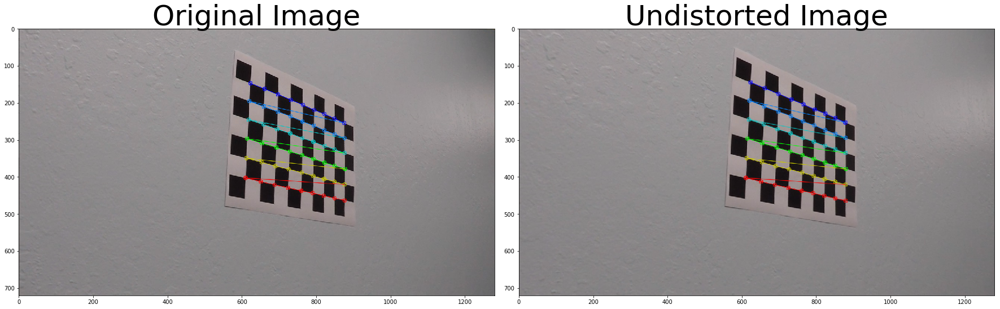
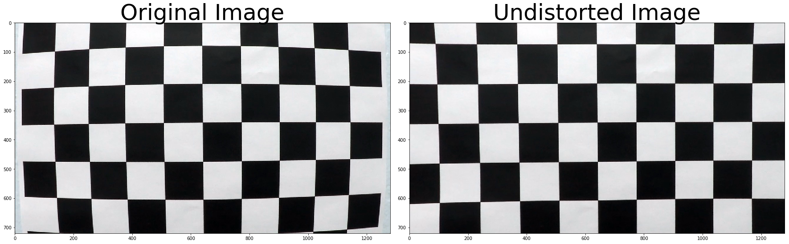
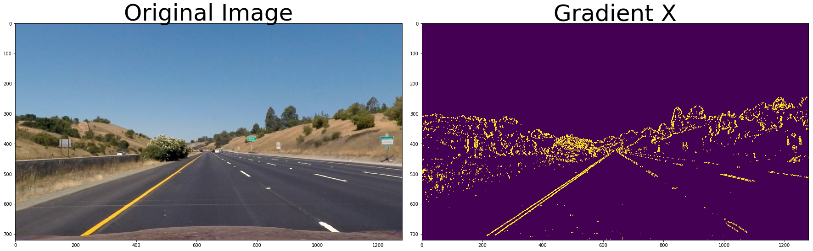
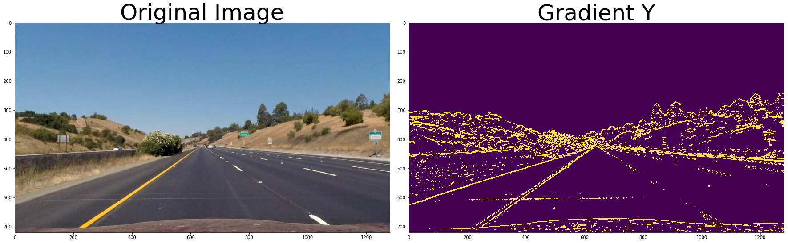
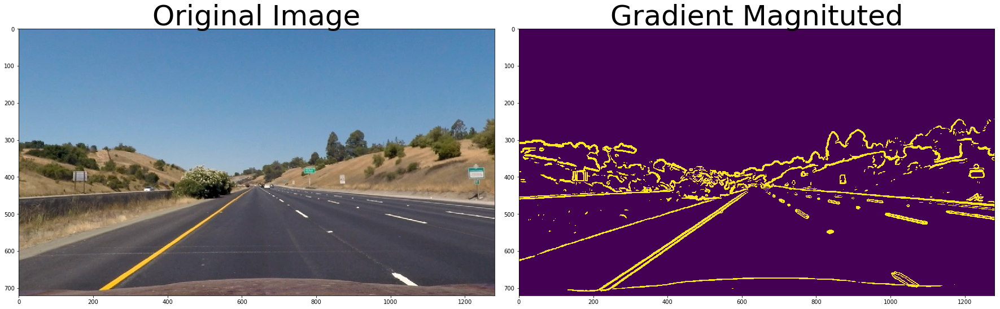
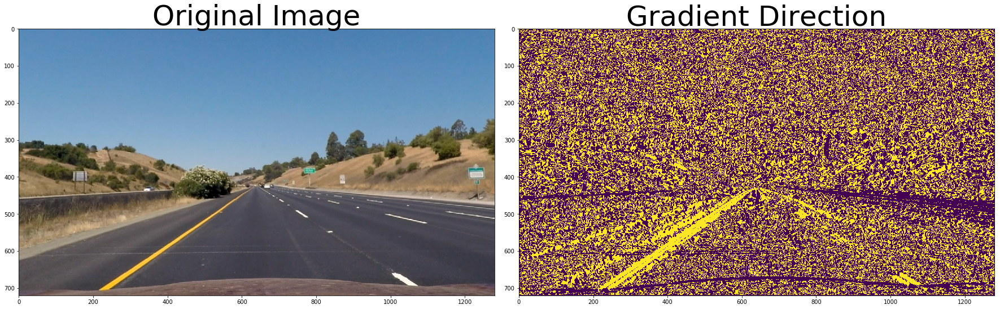
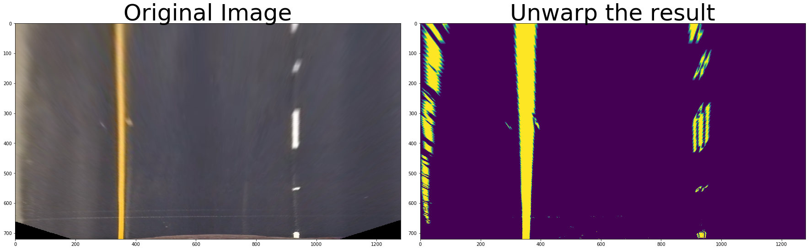
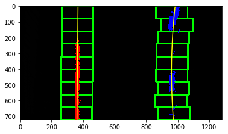
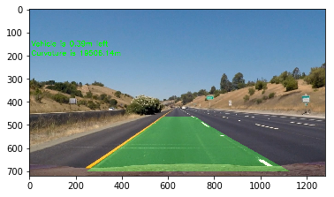

In this project, a robust lane detection algorithm which can also provide curvature of the road and the lateral position of the vehicle with respect to the center of the lane has been developed. In the following section, all of the criterias will be addressed. Brief explanation of how the code is working will also be provided.
This document is provided for this purpose
The provided chessboard pictures first converted to grayscale. Then with the opencv function each corner of the chessboard is found.  Since the distance of the each corner of a chessboard should be equal, the image is adjusted with this information via opencv function.
The following image shows clearly the effect of distortion correction. 
The common points of sobelx and sobely is combined since the lanes can appear on both of them clearly. With taking only common points, some of the distortion is removed. The same idea is used for magnitude and direction of the gradients. Since the lanes are expected in a certain angle, this information is utilized. However this information alone is too noisy. To remove it, the magnitude of the each gradient is also thresholded and only common points are used. On some sections of the road, color is really helpful since it doesn't affect from shadows etc. Because of this, HLS and Lab colorspaces is used to get the lines. The three combined images are also combined to add up all information from each combination. Few of the examples are given below. The results can be seen under output_images folder or in the LaneFinder.ipynb 
On one of the corrected images with straight lanes, four points on the lanes are chosen. They are ([574,466],[710,466],[1069,701],[232,701]). Then, another four points are chosen to create a shape of a rectangle. These settings can be found in the function called as warpSettings. The result of this function can be seen below, applied to a combined binary image and the original image. 
First, bottom half of the image is taken, and a histogram of number of active pixels on the y direction is calculated. On the histogram graph, maxima points are found and those are assumed as the mean of the lanes. Then the total image is divided in 9 regions. For each region, a small margin of pixels above the mean value is activated as the lane pixels. For the next region, mean of the previous region is used, so if there is a curvature, the windows also slide with the lanes on the image. Then, on the activated pixels, a second degree polynomial fit is used to find the equation of the lane. An example image of the process can be seen below. 
Two separate functions are created for this purpose. To calculate the radius of curvature, the formula used can be seen here. Since it is a second degree polynomial, calculating it's first and second degree derivatives are easy. For the vehicle's position it is assumed that the camera is attached in the center of the vehicle which means that if the center of the image aligns with the center of the lane, the distance is zero. The number of pixels are calculated between the center of the image and the left and right lanes. Since the width of the lane is already known approximately, this information has been used to check the validty of the road. If the number of pixels are too high from the expected value, it means the lanes are not correct. The only problem is, the values are in pixel, and to make sense we need meters. For conversion, known width of the lane, and length of a one lane mark is used. The pixel to meter rates are calculated by counting the pixels and using the real values in meters.

The final video is here.